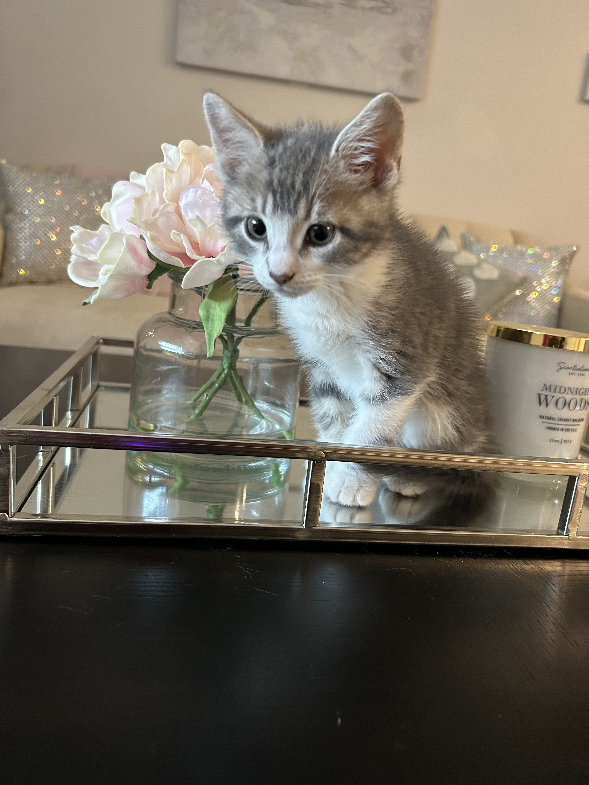

About Me!
Short Introduction
Hi Everyone! My name is Abbey and I'm a Senior at UD studying Computer Science with a custom concentration in Software Engineering and a minor in politics and social justice! I'm currently an intern with JPMorgan Chase and am a member of the CPUs! I am a firm believer that as technology continues to interweave with society, it is imperative that our creations are inclusive and conscious! I really love learning new things, so a lot of my hobbies revolve around learning! I'm currently learning how to crochet! I also enjoy baking and spending time outside!
I adopted a kitten over the summer, his name is Milo!
